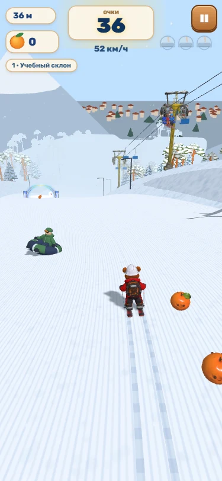
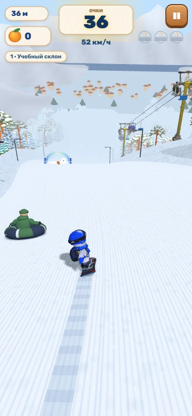
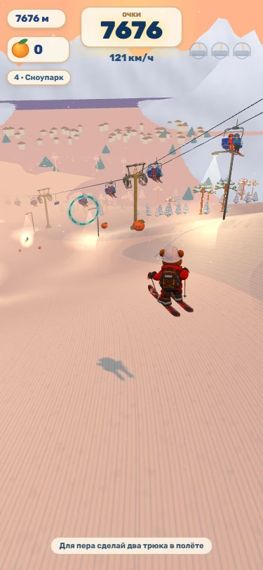
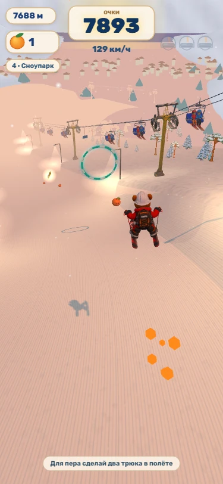
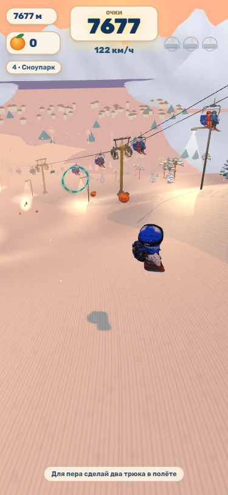
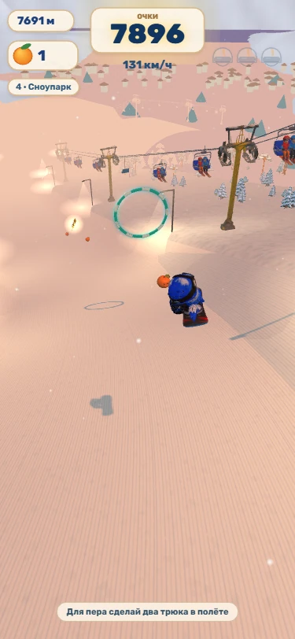

Проверочные заезды
Визуальное обновление, 62 карточки и видео прыжков
Выбери Мишаню или Сову и нажми «Поехали». На трассе № 1911 первая плюшка выезжает слева. Справа мандаринки ведут в объезд.


Два объезда в движении
Учебный склон
Ссылки открывают осмотр на паузе. Нажми ▶, чтобы поехать с указанного метра. В панели осмотра можно сменить героя и скорость. Все точки ниже используют seed 1911.
Лес, бугры и сноупарк
На высокой линии направь героя на трамплин. После отрыва на 7670,5 м тапни дважды, дождавшись конца первого трюка перед вторым тапом. Центр пера находится на 7736,6 м.








Бонусные трассы
В обычной игре перо открывает обе трассы в меню и на экране результата. Этими ссылками можно осмотреть их отдельно от своего сохранения.